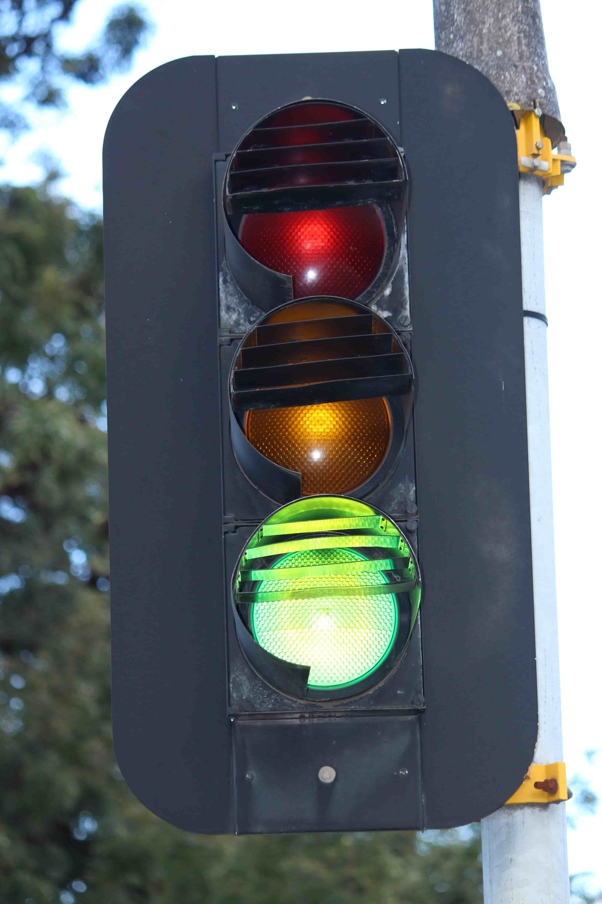
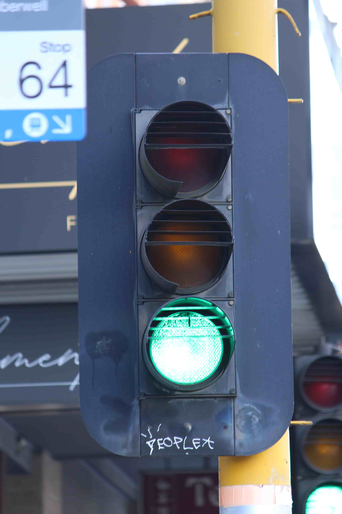
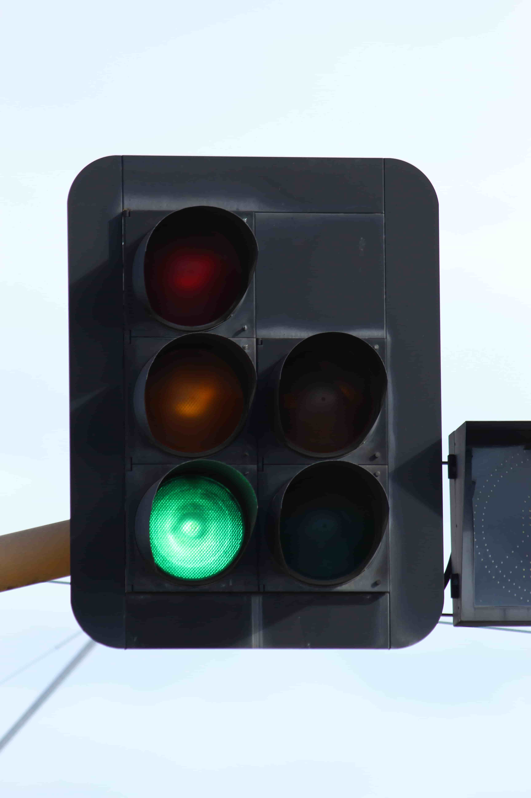
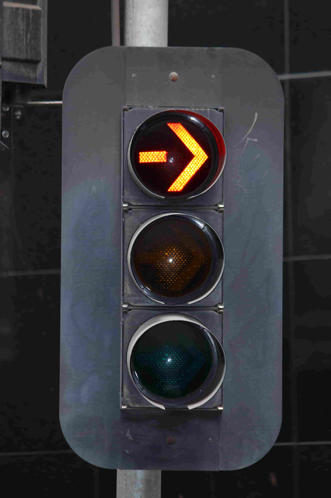
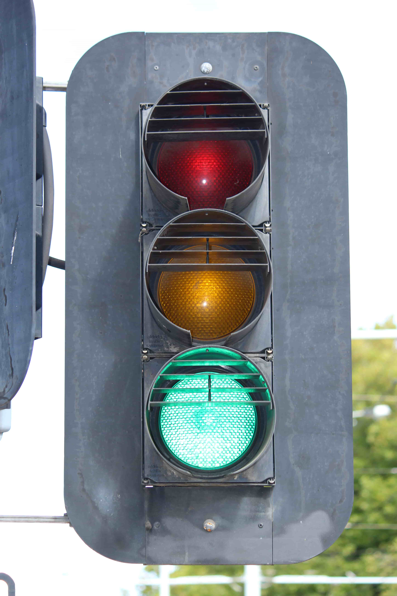
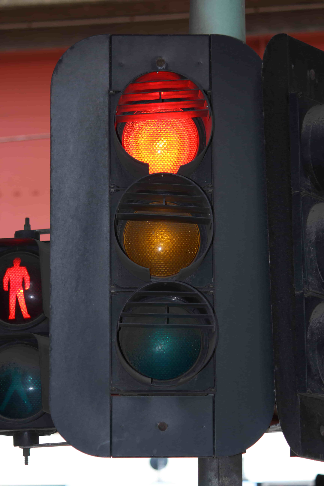

Aldridge manufactured incandescent and halogen traffic signals, from the 1980's to the early 2010's,
when halogens were succeeded by LED signals.
| Early Aldridge Traffic Systems (1980's) | ||
|---|---|---|
| ats "Durasig" 8" |
ats "Flatback" 8"  |
"ats Sydney" 8"  |
| Aldridge Group (1980's) | |
|---|---|
Aldridge Group 8" |
Aldridge Group 12"  |
| Later Aldridge (1990's to early 2010's) | ||
|---|---|---|
| Aldridge Electrical Industries 8" & 12"  |
Aldridge Traffic Systems 8" & 12"  |
Aldridge Traffic Group 8"  |